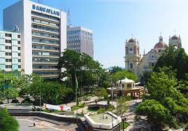
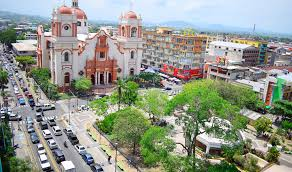

San Pedro Sula es una ciudad de la República de Honduras, capital administrativa del departamento de Cortés y una de las ciudades más grandes de Centroamérica y la segunda ciudad en población detrás del las ciudades gemelas de Tegucigalpa y Comayagüela.
San Pedro Sula fue fundada el 27 de junio de 1536, bajo el nombre de San Pedro de Puerto Caballos por el conquistador español Pedro de Alvarado. Inicialmente, la villa se estableció en el pueblo indígena de Choloma, al norte de la actual ciudad y muy próxima a Puerto Cortés
San Pedro Sula, asentado en las tierras bajas, tiene a menudo un clima agobiante.10 Este puede llegar a ser extremadamente caliente y húmedo.
 El municipio de San Pedro Sula, es la zona industrial más importante del país. Más de 20 ramas industriales generan un alto porcentaje de los ingresos de la población sampedrana. Entre éstas se encuentran: Industria farmacéutica, Llamadas Heladas, hule, refrescos y cervezas, textíles, algodón, imprentas, plásticos, tabaco, cosméticos, sueros, procesadoras de carne, concreto, jabón, pinturas, entre otras